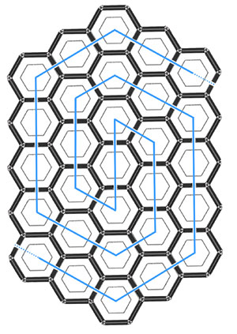

Curiosity killed the cat, so the saying goes. A warning: question things and face the consequences. I agree that there are consequences. Although curiosity may lead to premature death, I write here about the consequences it presents me while living.
The desire to know—by experience or understanding—appears to be the essence of my curiosity. Sometimes I seek knowledge in order to do something else (a means to an end), sometimes simply because I like learning (an end in itself). Reading, theorising, travelling, testing: this desire takes many forms.
The issue I have with curiosity is somewhat paradoxical. In embracing my curiosity I become more curious. The more I learn, the more I’m aware of what I don’t know; the more I explore, the more I realise how much there is to discover. At the end of a scientific paper, there’s a list of references to other papers, each in turn with its own list of references and so on. It seems to be a positive feedback loop.
This leads me to the disconcerting feeling that the more I learn, the less I know. In dark moments (Wikipedia trawling into the night) it even feels like learning decreases my intelligence. I do understand the temptation of dogmatic ignorance.
I want to focus on books. Books are like bricks of materialized information, sliced into pages. You can sense the weight shifting from the back of a book to the front as you turn the pages, a tactile progress indicator. You can write in notes—I’m not just a defendant, but a proponent of the practice—to customise the book to your particular interest.
Libraries, then, are like temples of information. Books like bricks, forming walls. I can feel small to the point of insignificance when I look into the night sky, but somehow insulated by the distance to the celestial bodies. Libraries, smaller, intimidate my curiosity far more: a mass of unknowable knowledge within grasp.
Certainly there are some small libraries which you could read through. Yet even with a life dedication to reading, one wouldn’t come close to the tens of millions of books in the largest libraries—and any of those contain but a fraction. A prescient vision of the current situation was made by over 200 years ago Denis Diderot in his “Encyclopédie” (1755) when he writes:
“As long as the centuries continue to unfold, the number of books will grow continually, and one can predict that a time will come when it will be almost as difficult to learn anything from books as from the direct study of the whole universe. It will be almost as convenient to search for some bit of truth concealed in nature as it will be to find it hidden away in an immense multitude of bound volumes.”
On the topic of ‘an immense multitude of bound volumes’, let’s consider the Library of Babel found within the short story of the same name by Jorge Luis Borges. This library “is composed of an indefinite, perhaps infinite number of hexagonal galleries” with the bookshelves filled with books of “four hundred ten pages; each page, forty lines; each line, approximately eighty black letters”. Each book contains a unique, random set of letters such that the “bookshelves contain all possible combinations of the twenty-two orthographic symbols”.

An impression of the Library of Babel based on theoretical work by Jonathan Basile from libraryofbabel.info
This library would contain all books: all known books, the books lost to history, those intended to be written and all future books (including “the true story of your death”). At the prospect of this absurd library, with a vastness as incomprehensible as space, I once again relax.
From curiosity to universal library, how did I get here? Why do I keep coming back to such an overwhelming place?
I know that
David Foster Wallace, This is Water http://metastatic.org/text/This%20is%20Water.pdf
“there is actually no such thing as atheism. There is no such thing as not worshipping. Everybody worships. The only choice we get is what to worship. And an outstanding reason for choosing some sort of God … is that pretty much anything else you worship will eat you alive. … Worship your intellect, being seen as smart — you will end up feeling stupid, a fraud, always on the verge of being found out.”
absurdism -> anarchism anarchism -> absurdism, iterative
Popper